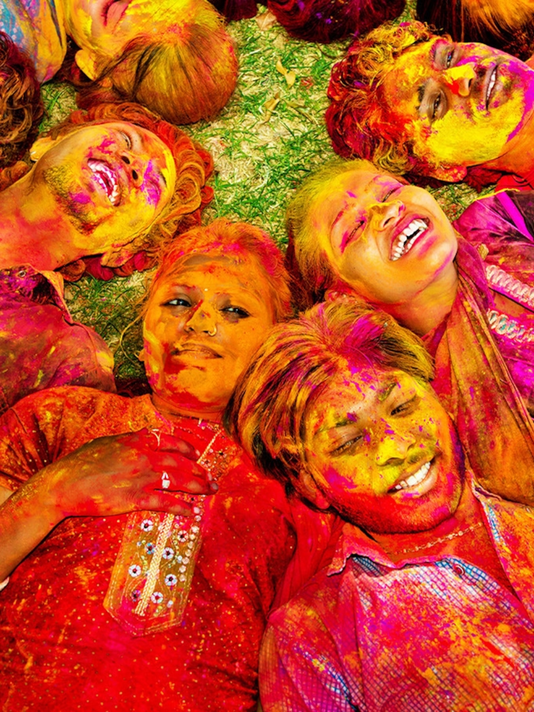

Photos About Holi

Information About Holi
Holi ( /ho ʊli/) is a popular ancient Hindu festival, also known as the "Festival of Love", the "Festival of Colours" and the "Festival of Spring". The festival celebrates the eternal and divine love of Radha Krishna. It also signifies the triumph of good over evil, as it celebrates the victory of Lord Vishnu as Narasimha Narayana over Hiranyakashipu. It originated and is predominantly celebrated in the South Asia but has also spread to other regions of Asia and parts of the Western world through the Indian diaspora. Holi celebrates the arrival of spring, the end of winter, the blossoming of love and for many, it is a festive day to meet others, play and laugh, forget and forgive, and repair broken relationships. The festival also celebrates the beginning of a good spring harvest season.It lasts for a night and a day, starting on the evening of the Purnima (Full Moon Day) falling in the Hindu calendar month of Phalguna, which falls around the middle of March in the Gregorian calendar. The first evening is known as Holika Dahan (burning of Demon Holika) or Chhoti Holi and the following day as Holi, Rangwali Holi, Dol Purnima, Dhuleti, Dhulandi, Ukuli, Manjal Kuli, Yaosang, Shigmo or Phagwah, Jajiri. Holi is an ancient Indian religious festival that has also become popular outside of India. In addition to India and Nepal, the festival is celebrated by Indian subcontinent diaspora in countries such as Suriname, Guyana, Trinidad and Tobago, Jamaica, South Africa, Mauritius, Fiji, Malaysia,[23] Singapore, the United Kingdom, the United States, the Netherlands, Canada, Australia, and New Zealand. In recent years, the festival has spread to parts of Europe and North America as a spring celebration of love, frolic, and colours. Holi celebrations start on the night before Holi with a Holika Dahan where people gather, perform religious rituals in front of the bonfire, and pray that their internal evil be destroyed the way Holika, the sister of the demon king Hiranyakashipu, was killed in the fire. The next morning is celebrated as Rangwali Holi (Dhuleti) -a free-for-all festival of colours, where people smear each other with colours and drench each other. Water guns and water-filled balloons are also used to play and colour each other. Anyone and everyone is fair game, friend or stranger, rich or poor, man or woman, children, and elders. The frolic and fight with colours occurs in the open streets, parks, outside temples and buildings. Groups carry drums and other musical instruments, go from place to place, sing and dance. People visit family, friends and foes come together to throw coloured powders on each other, laugh and gossip, then share Holi delicacies, food and drinks.In the evening, people dress up and visit friends and family.
Gallery